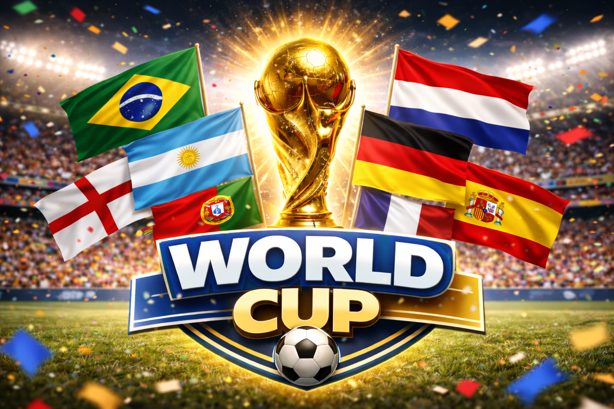

The Sporting Almanac Football archive is dedicated to preserving the complete competitive history of the world game. This section focuses on major international tournaments, national team records, and historical performance analysis across football’s most important global competitions.
Rather than match reports or news coverage, this archive is built as a long-term historical reference — designed to document how nations, players and tournaments have evolved across generations.
